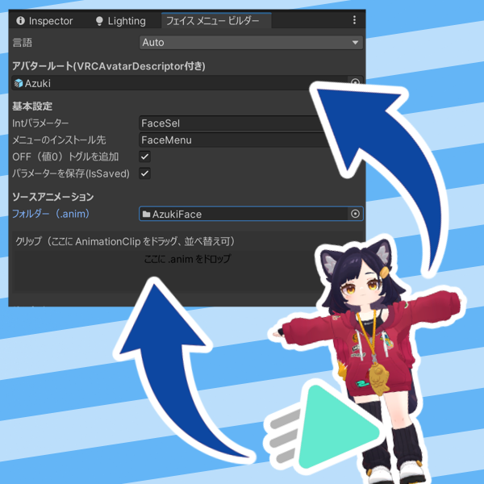
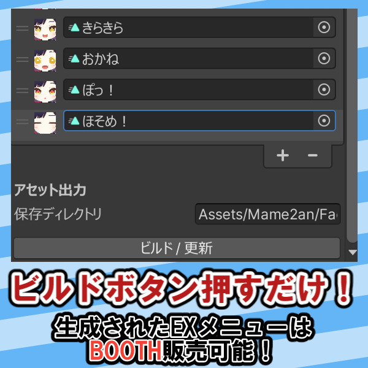

概要
「フェイスメニュービルダー」は、VRChat向けアバターの多様な表情を、Expression Menuとして自動的に構築するエディタ拡張ツールです。
表情アセットの販売や、大量の表情を使い分けたいユーザーに最適。メニューだけでなく、各表情に対応したアイコンも自動生成されるため、手作業による煩雑な設定から解放されます。
主な機能
- メニュー自動生成: 表情アセットを読み込み、瞬時にメニュー構造を作成。
- アイコン自動生成: 設定した表情に対応するアイコン画像を自動でキャプチャ・生成。
- Modular Avatar連携: 非破壊的な改変環境でもスムーズに動作。
- 干渉防止設定: 表情変更時にリップシンクやまばたきが干渉しないように制御されるデフォルト設定です。
ギャラリー


導入に必要なもの / 動作環境
- ✔ Unity 2022.3.22f1 (VRChat推奨バージョン)
- ✔ VRChat SDK 3.0 (導入済み環境で開発・動作確認済み)
- ✔ Modular Avatar
注意点
※Modular Avatar 1.13.2 ～ 1.13.4 での動作を確認しています。MA側の更新により挙動が変わる場合があります。
※本ツールをアセットに同梱して販売することは禁止されています（クレジット表記の上、生成アセットの利用は可能です）。